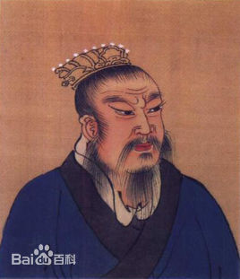
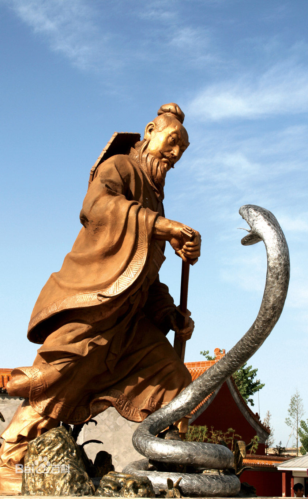
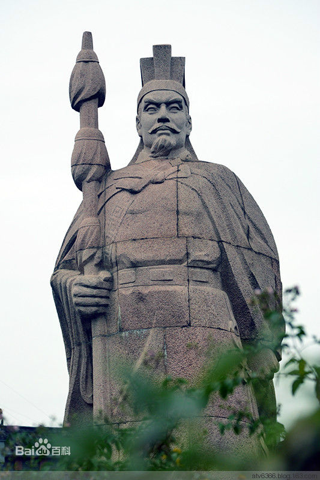
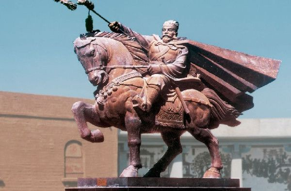
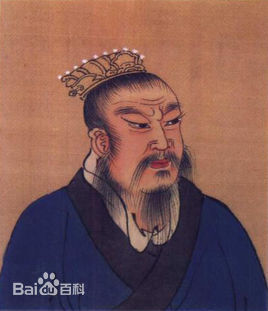
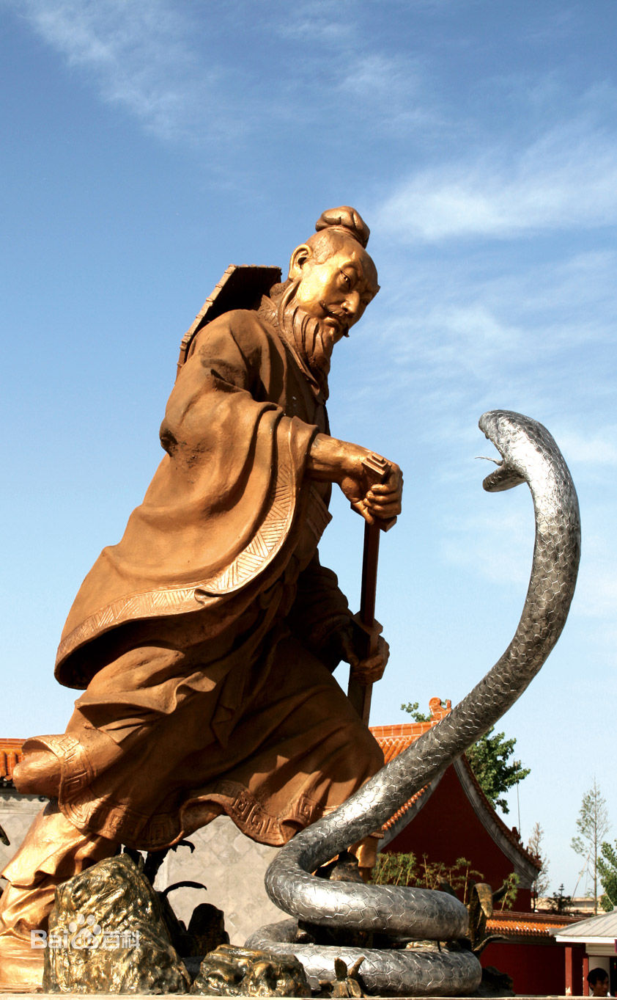
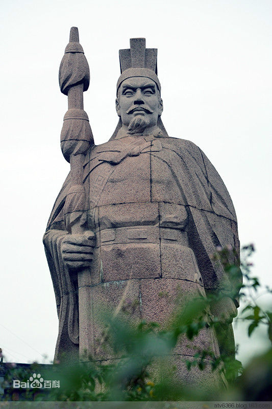
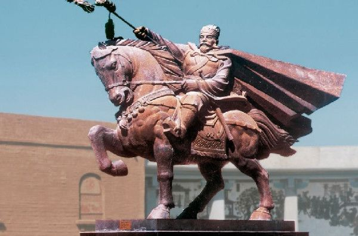

-
刘邦 （汉朝开国皇帝）
刘邦（公元前256年冬月二十四—前195年四月二十五），即汉太祖高皇帝，沛丰邑中阳里人，汉朝开国皇帝，汉民族和汉文化的伟大开拓者之一、中国历史上杰出的政治家、卓越的战略家和指挥家。对汉族的发展、以及中国的统一有突出贡献。
  -
张骞
张骞（前164年―前114年），字子文，汉中郡城固（今陕西省汉中市城固县）人，中国汉代杰出的外交家、旅行家、探险家，丝绸之路的开拓者，故里在陕西省汉中市城固县城南2千米处汉江之滨的博望村。
 
刘邦（公元前256年冬月二十四—前195年四月二十五），即汉太祖高皇帝，沛丰邑中阳里人，汉朝开国皇帝，汉民族和汉文化的伟大开拓者之一、中国历史上杰出的政治家、卓越的战略家和指挥家。对汉族的发展、以及中国的统一有突出贡献。
 张骞（前164年―前114年），字子文，汉中郡城固（今陕西省汉中市城固县）人，中国汉代杰出的外交家、旅行家、探险家，丝绸之路的开拓者，故里在陕西省汉中市城固县城南2千米处汉江之滨的博望村。
 